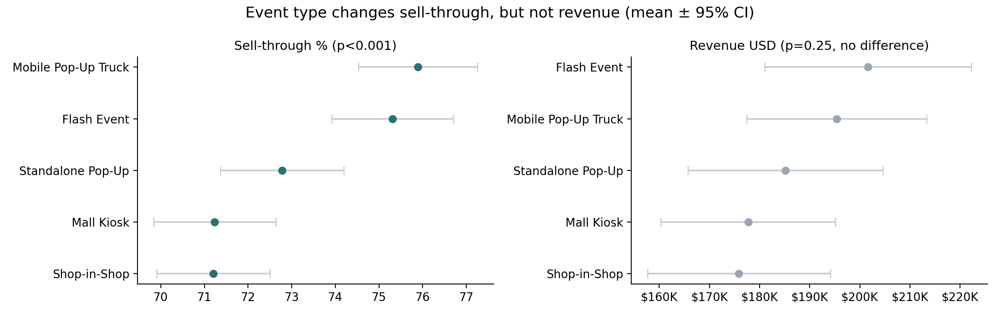
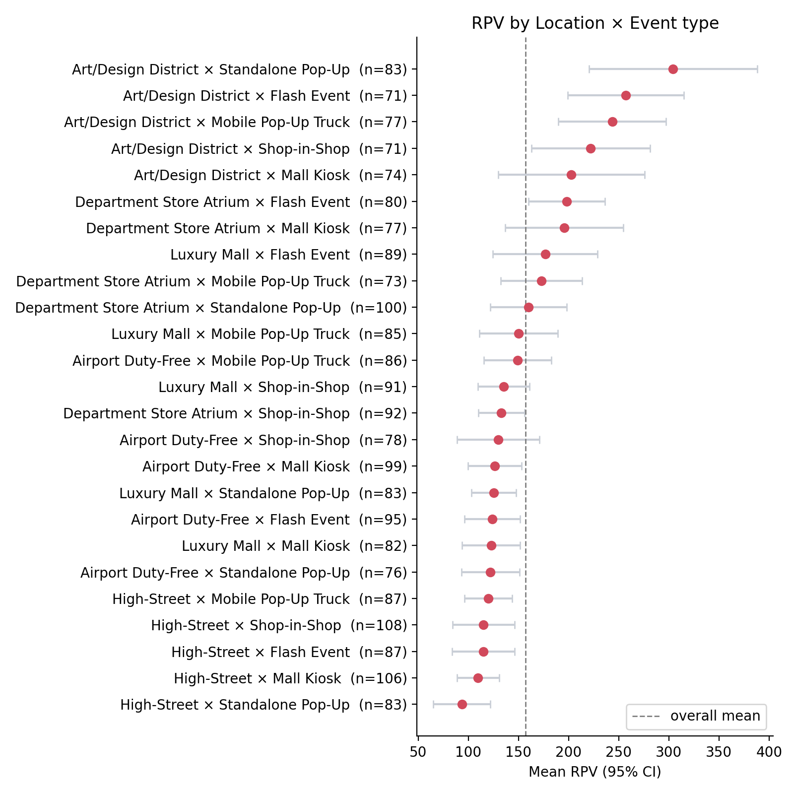

01Figure

02Goal
As K-beauty pop-up stores become more common, choosing the right location has become increasingly important. Locations with higher foot traffic also tend to have higher rental costs. This project asked:
- Do locations with higher foot traffic actually generate more revenue or higher revenue per visitor (RPV)?
- Does the type of event (e.g., a flash event or a mall kiosk) affect sales performance?
- After controlling for other factors, what actually drives revenue?
03Methodology & Summary
- Data: Kaggle "Luxury Beauty Cosmetics Pop-up Events KPI 2025" (2,133 events, 15 variables), including location type, event type, brand, product price, average daily footfall, units sold, revenue and sell-through rate (the share of stock that was sold).
- Preprocessing: Filled 36 missing end dates using the lease length, grouped product names into categories with regular expressions, and grouped start months into seasons.
- New measure: RPV (revenue per visitor) = revenue ÷ total footfall over the event (average daily footfall × lease days). It counts everyone who visited, not only buyers, and compares how efficiently each location turned traffic into sales.
- Analysis steps:
- Correlation: Do footfall and revenue move together?
- One-way ANOVA: Do average footfall, revenue and sell-through really differ across location types and event types, or could the gaps be due to chance?
- Two-way ANOVA: Do some location and event type combinations perform better than the two effects would predict on their own?
- Multiple regression: Holding brand, season, region and other factors constant, which variables explain revenue?
- 95% confidence intervals: Is the top-ranked combination clearly ahead, or do its intervals overlap with others?
- Visualization: A Tableau Public dashboard with three tabs (Overview, Brand, Efficiency).
04Results
r = −0.02Footfall vs. revenue
R² = 0.53Revenue explained by price alone
2.04×Footfall needed for similar revenue
| Question | Test | Result |
|---|---|---|
| Does revenue rise with footfall? | Correlation | r = −0.024 (no relationship) |
| Does footfall differ by location? | One-way ANOVA | p < 0.001 (yes) |
| Does revenue differ by location? | One-way ANOVA | p = 0.142 (no) |
| Does sell-through differ by event type? | One-way ANOVA | p < 0.001 (yes) |
| Does revenue differ by event type? | One-way ANOVA | p = 0.247 (no) |
| Do location × event combinations matter? | Two-way ANOVA | p = 0.097 (no) |
| How much of revenue does price explain? | Multiple regression | R² 0.527 → 0.536 (+8 variables) |
p < 0.05 means a difference this large is unlikely to be due to chance.
- High traffic did not mean high revenue. Footfall and revenue were unrelated (r = −0.02). Footfall differed sharply by location (p < 0.001), but revenue did not (p = 0.14). High-Street locations drew 2.04 times the daily footfall of Art/Design District locations (1,880 vs. 920), yet earned about 10% less on average ($187,232 vs. $208,104). Art/Design District ranked first in RPV ($9.92 per visitor vs. $3.63 for High-Street) simply because it reached similar revenue with the fewest visitors. Lease lengths were similar across locations (about 46–48 days on average, p = 0.58), so the gap did not come from longer events.
- Revenue was driven by product price, not location. Price alone explained 53% of the variation in revenue (R² = 0.527). Adding location, event type, brand, season and four other variables raised this only to 54% (R² = 0.536), and none of them was statistically significant; footfall came closest (p = 0.051), and its effect was slightly negative. Average units sold differed little (1,840 to 2,038 across event types), so revenue gaps came mostly from what was sold, not where.
- Event type changed sell-through, not revenue. Mobile pop-up trucks (75.9%) and flash events (75.3%) sold more of their stock than mall kiosks and shop-in-shops (71.2% each; p < 0.001). Flash events beat mall kiosks by 4.1 percentage points. Revenue, however, did not differ by event type (p = 0.247).
- The "best combination" ranking was not reliable. The interaction between location and event type was not significant (p = 0.097). The top combination (Art/Design District × Standalone Pop-Up, $14.06 per visitor) had a wide 95% confidence interval ($5.82 to $22.31) that overlapped with 16 of the other 24 combinations, so its first place may be due to chance.


05From Analysis to Decision
- Who would use it: Brand marketing teams planning where and how to run pop-up stores.
- What decisions change:
- Choose locations by cost efficiency, not traffic. Since revenue did not differ by location, lower-rent locations deserve consideration before busy, high-rent ones.
- Reach revenue targets through the product mix. Planning the share of higher-priced products, such as perfumes and serums, matters more than negotiating for a prime location.
- Pick the event type based on inventory goals. When the aim is to sell out limited stock, flash events and mobile pop-up trucks are the better choice.
- Limitations and next steps:
- Revenue is calculated as price × units sold, so a strong link between price and revenue is partly built into the data.
- No variable in the data explained units sold, and variables other than price explained almost nothing, which suggests the data may be synthetic.
- Rent and advertising costs were not available, so return on investment by location could not be calculated directly.
- Next steps: combine cost data to compare return on investment by location, and test whether changing the event type actually raises sell-through.
06Code
The full analysis, code and figures are in the GitHub README.